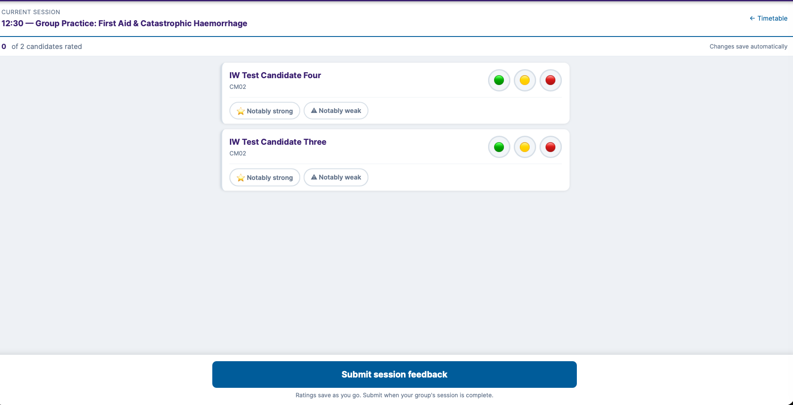
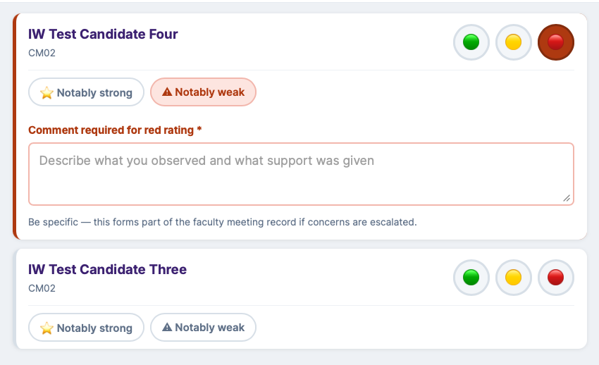
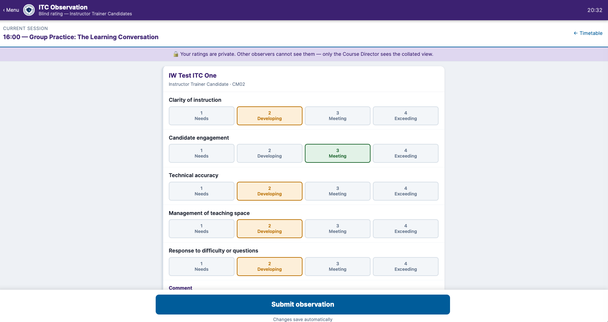
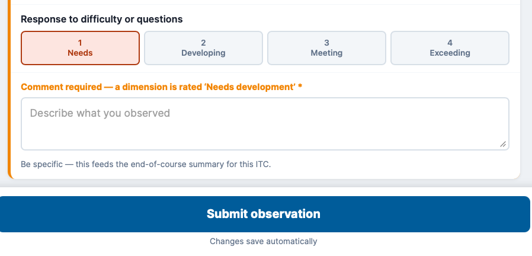

The basics
Meals, socials & what to bring
- Lunch is provided both days.
- A postgraduate meal is provided on Saturday evening, and you're welcome to come with us when we join the undergraduate team at The Country Girl afterwards.
- If you've already been issued an RMD polo shirt, bring it for the weekend.
- Bring your own water bottle or hot drink flask.
Checking in on Saturday morning
Self-serviceYou check yourself in — scan the same poster QR code candidates use, type your name to find yourself on the list, and confirm you've arrived. No need to queue at the registration desk; that's staffed for candidates.


Your room, timetable & the Noticeboard
Everyone signed inThe blue banner across the top of the timetable shows your room for the weekend. A highlighted row always marks whichever session is running now. Below it, the Noticeboard carries messages from the Course Director — ✓ Dismiss clears one for you only.

Room Rosters
Everyone signed inReached via 🏠 Rooms in the timetable header — every room's Instructor Trainers and candidates side by side, plus whichever ITC is visiting each room for the session block you pick.

Teaching materials & timers
Full accessTap a timetable session to expand it. You'll see slides plus the full Session Guide and any video walkthroughs — those two are held back from candidates, so if you're leading a session, expand it beforehand to check what's attached.
Those running or presenting sessions not held in the CM rooms will be added to the programme separately — please check the timetable to see if you're one of them.
Any session can also open a countdown timer — useful for keeping small-group teaching, presentations and feedback on schedule.

Assessor / Senior Instructor programme
Faculty toggleA second programme runs in parallel for Assessors and Senior Instructors. You'll find a toggle at the top of the timetable to switch between the two streams.
Resources & the 2025 guidelines
Required readingThe Resources hub has everything we expect you to know and use throughout the course — the QCPR app, ERC and RCUK guidelines, Lifesaver, and the teaching videos.
We're reverting to the four-stage approach for skills teaching this year: show it — demonstrate the skill in real time, without narration; teach it — teach the concept and the course standard; facilitate it — get every candidate trying the skill; assess it — confirm the standard's been reached, which may happen within facilitation itself. Full detail below.
The stepwise teaching approach
| Show it | Demonstrate the skill in real time without added narrative explanation. |
| Teach it | Teach the concept and the course standard. |
| Facilitate it | Get all candidates involved in trying the skill. |
| Assess it | Confirm the course standard has been reached — this may be possible within the facilitation stage. |
Encourage peer-to-peer learning where reasonable, drawing on candidates' previous experiences.
Session structure: Prepare – Open – Facilitate – Close
| Prepare | Prepare the session content, room layout and environment beforehand; check all equipment is working; brief any co-instructor on their role; stay aware of the time. |
| Open | Introduce all participants (self, co-instructor, candidates), outline the session's flow, and state the learning and assessment outcomes. |
| Facilitate | Explain and demonstrate the skill, facilitate candidate practice while acknowledging prior experience, assess whether outcomes are met, provide or organise additional coaching as needed, and interact with your co-instructor to confirm assessment decisions. |
| Close | Gain feedback from candidates, summarise key learning points, inform candidates of their outcome, complete documentation, outline next steps, thank the co-instructor and candidates, and leave the area tidy. |
Rating candidates
Faculty & DirectorAfter a group session, rate each candidate in your room green / amber / red, flagging anyone notably strong or notably weak. You see your own room only. A red rating needs a comment; it feeds the faculty meeting record if concerns are ever escalated.


How assessment works on the platform
Replaces the old Google FormsWhen you open the timetable on your phone, a dark toolbar appears at the bottom of the screen — your quick-access panel for both assessment tools, all course through.
BLS Gateway — Saturday morning, before 12:00 noon. The formal competency check for BLS/AED: during the Saturday morning group practice session, each candidate must demonstrate their skills to the required standard. Tap BLS Gateway, select your room, and mark each candidate Pass or Refer.
⚠ All Gateway assessments must be completed by 12:00 noon Saturday. The Assessment Dashboard flags any candidate not yet assessed.
Development — Saturday afternoon and Sunday, during teaching practice. Not pass/fail: your structured feedback on how a candidate taught, building their teaching record. Tap Development, select the candidate and session, and complete the form — candidates can have multiple entries across the day.
Assessment Dashboard. The Course Director monitors all assessments here, with real-time completion status across every room. You don't need to access this yourself — it's the Director's overview. Any query about a candidate's assessment record goes to Jon directly.
Messaging
Course DirectorThe Course Director can send broadcast messages to all rooms or specific rooms — these appear as a Noticeboard notification on candidates' timetable screens.
Rating ITCs — blind observation
Saturday afternoon & SundayRate an Instructor Trainer Candidate you observe across five dimensions, each scored Needs / Developing / Meeting / Exceeding. Ratings are blind — you can't see another observer's — and only the Course Director sees the collated view. A "Needs development" score requires a comment, which feeds that ITC's end-of-course summary.


When timings shift
Assessor Faculty & DirectorIf a session overruns, or the group gets through it early, the Director can shift the rest of the timetable live in either direction — later or earlier — and it cascades automatically to everything after it. The timetable is the source of truth, not the printed schedule in your head, so keep an eye on it through the day rather than assume your session starts when you first thought.